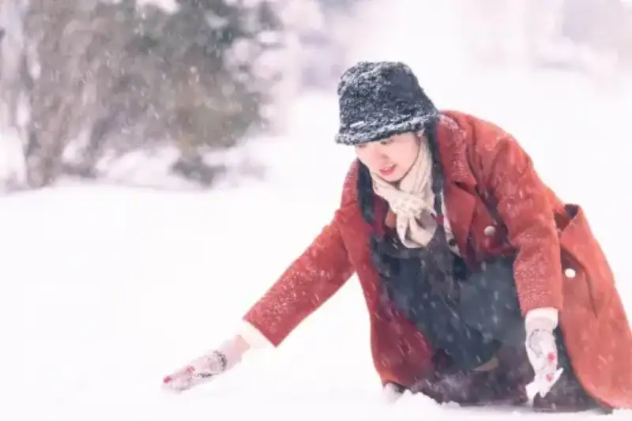
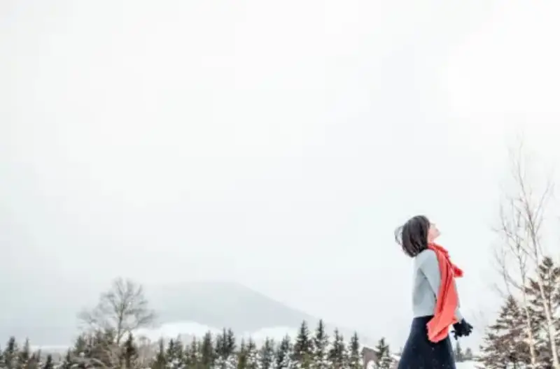
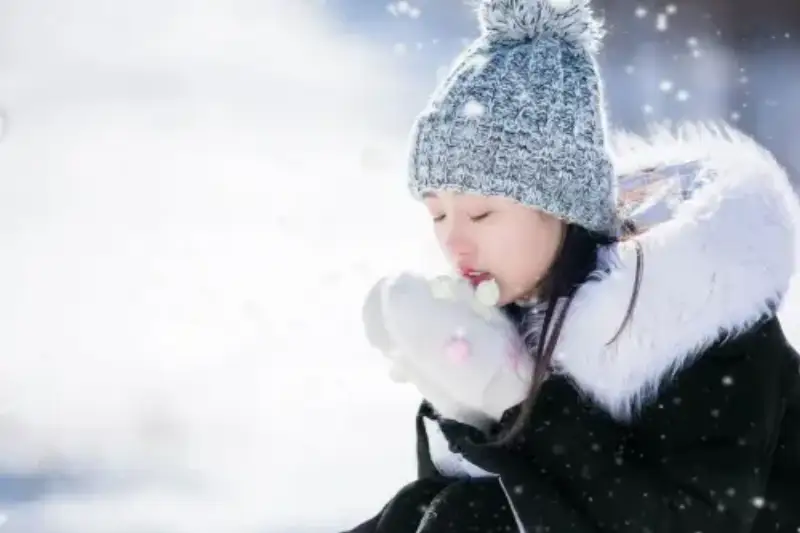
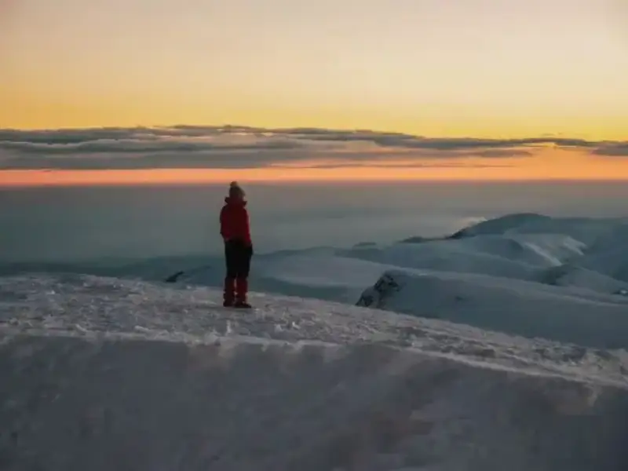
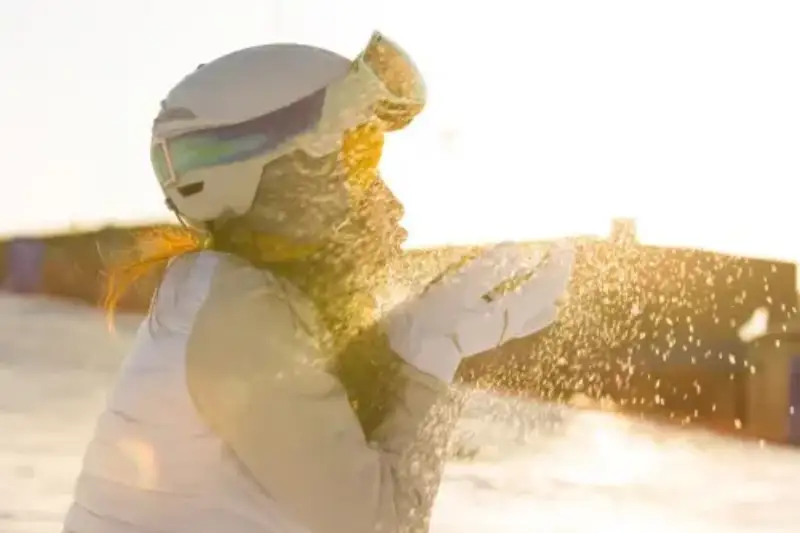
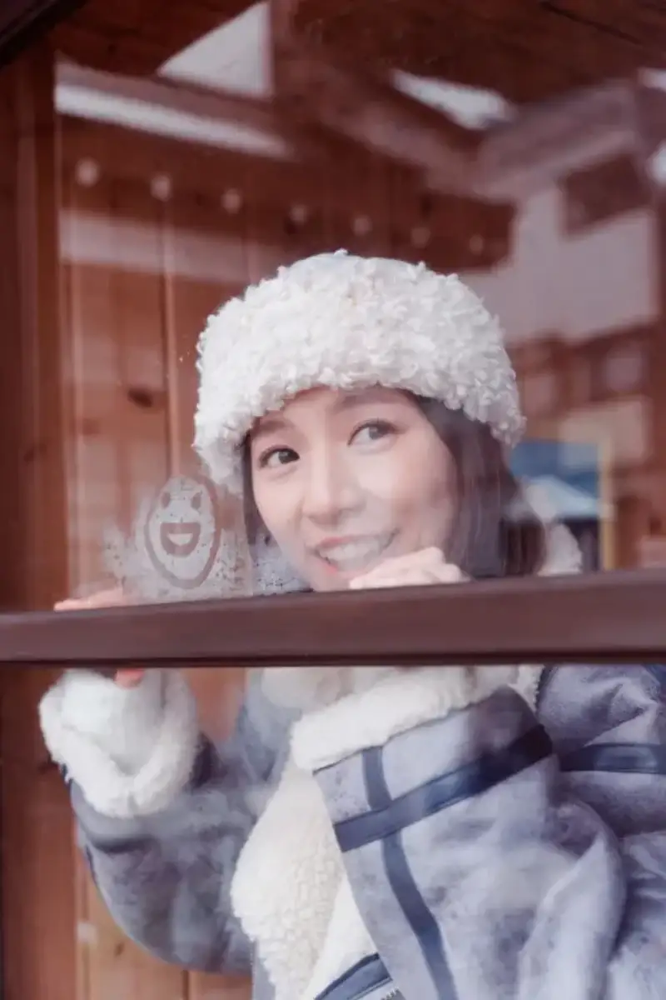

In the cold of winter, the clear frost and snow together with warm sunlight give photographers an excellent, pure backdrop,They give portrait photography a special charm. How can you blend winter elements well and catch photos that are both beautiful and full of life? Follow Visual China and explore some tips for winter portrait photography!
Break the single color
On a winter day wrapped in silver, photos often face the problem of a single color. To make portraits more vivid and eye-catching, we can try to blend in other color elements.
There are many ways to add color. For example, dress the model in a bright coat or bright accessories. Warm tones become the focus against the white snow and give the frame strong visual impact.

Also, choose a set of colorful props that carry a winter mood, such as bright balloons or tanghulu (candied hawthorn skewers). All of these add energy to the frame and set a warm winter mood.
Keep the frame clean
For winter portrait photography, the key is to catch the freshness of winter with a simple, pure frame. Whatever the shot size, keep too many cluttered elements out of the frame. This keeps the image clear and pure, and lets the person respond in harmony with nature.
When you shoot a medium or long shot, you can leave blank white snow and let the person be the focus. This sets off the quiet mood of winter. In this way, the person and the setting are closely linked. The light, airy feeling of nature stands out, and the emotion and visual layers of the frame rise.

When you take a close shot of a person, let the person take the main place in the frame. At the same time, leave out extra background details and keep only a few winter elements, such as falling snow.
This keeps the viewer's eye from drifting and strengthens the winter mood of the frame. A simple background and a few elements make the person the natural center of attention. This strengthens the emotional message of the whole image.

Catch winter light
Natural winter light is usually soft and layered. In a snowy setting, the white snow acts as a natural reflector. It spreads the light well and adds rich texture to the photo.
Winter mornings and evenings are a great time for portrait photography. In the early morning, when the sun rises, the light is soft and carries a cool touch. It shows the stillness of winter well. In the evening, as the sun sets, the light grows softer and more layered. This is ideal for a deep, calm mood.

Backlit shooting is a portrait technique that creates a dreamy mood. When soft winter light falls, the edges of the person's hair are gently outlined in a clear rim of light. This fills the frame with warmth. This light effect adds emotional depth to the whole image and gives it a beautiful grace.

Vary the scene
If you do not want stiff, still poses in the snow and ice, you can catch the lively moment of winter sports, or freeze people moving freely in a warm indoor setting.
Winter sports such as skiing, ice skating, and sledding offer rich subjects for photography. These sports are full of energy and motion. They also show the close contact between the person and nature in the cold.

Outdoor sports are full of energy, but indoors you can also take good photos. Catch the soft indoor light, the warm tones, and the interaction between people. This can show the easy pleasure of staying home in winter.
Also, try shooting indoors through a windowpane from outside. When the person breathes onto the glass, the mist that forms becomes a natural canvas. This unusual interaction adds a touch of childlike charm to the photo.

Finally, a warm reminder: when you shoot outdoors in winter, safety comes first. Do not forget to keep warm and avoid frostbite. Only when you take care of yourself can you catch more beautiful moments. Now pick up your camera, set your creative ideas free, and go catch the charm of winter!